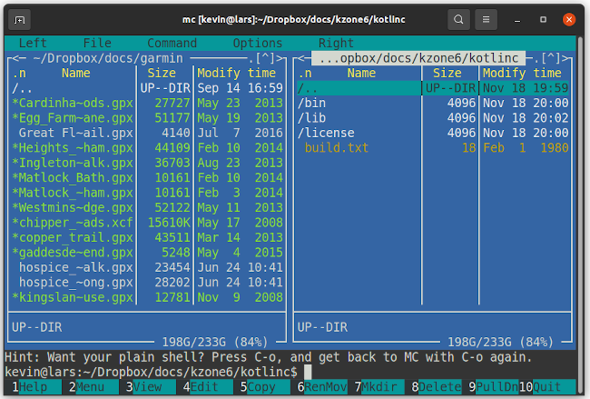
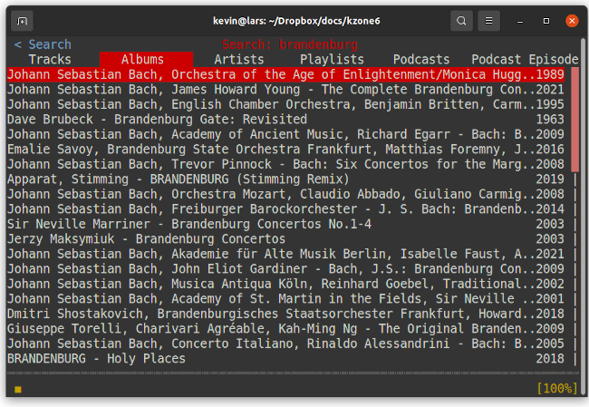

Why the Linux console is so awesome
 We've all gotten used to working with graphical desktops, on
Linux as well as other platforms. And there's a good reason for
this -- graphical desktops, and applications designed to use them,
are very accessible. It doesn't need much skill or training to use a web
browser in a graphical desktop and, in fact, doing this is very
similar on any platform.
We've all gotten used to working with graphical desktops, on
Linux as well as other platforms. And there's a good reason for
this -- graphical desktops, and applications designed to use them,
are very accessible. It doesn't need much skill or training to use a web
browser in a graphical desktop and, in fact, doing this is very
similar on any platform.
There is a problem with graphical desktops, though. Actually, several problems, but they all have the same root cause: graphical desktops are monumentally resource-intensive. It needs a lot of CPU and memory to maintain a modern desktop like Gnome, and the kind of software that is designed to run on it. Manufacturers put a lot of effort into making CPUs and memory power-efficient and, on the whole, they've done a good job. Faster CPUs don't necessarily use more energy than slower ones, when doing the same kind of work.
Still, in this world of climate change and rising sea levels, we should all be thinking about how we can minimize our energy usage. The reality is that a computer that runs with only a console (and I'll try to define "console" later, because it's important) will be hugely more efficient than one that has a graphical desktop.
Many low-cost, or old, computing devices don't even have the capabilities to run a graphical desktop effectively. Consider the Raspberry Pi 3 series, for example. These devices are barely usable with a lightweight graphical desktop like XFCE, and are like a beached whale when trying to run Gnome. But they positively fly when running console-based applications. With console-only operation, a Pi 3 is a truly usable computing platform, that will never consume more than about ten watts, and usually more like two watts.
Is this awesome? I think that's an appropriate term to describe a practical computing platform that will run efficiently and use only a few watts. Even better, console-only operation will make a viable computer out of something that would otherwise be fit only for landfill.
In this article, I will try to convince readers that almost everything (but, sadly not absolutely everything) you might use a computer for, can be done without a graphical desktop. First, though, I think it's necessary first to distinguish between console tools, terminal tools, and command line tools. There is, of course, much overlap between these three categories. Many tools for the console or terminal will be command-line tools. That is, they will do all their work in a single invocation of a command, taking some input and doing something useful with it. Command-line tools are usually not interactive. I'm not really interested in command-line tools in this article -- they are hugely important, but Linux users know them all already.
Console or terminal tools, on the other hand, include any software that is designed to run, well, in a console or terminal. A "console" turns out, in fact, to be rather hard to define. Broadly, a console is a keyboard and a fixed-size screen, or something that emulates them. A terminal is a console that displays only text, usually of fixed pitch. The archetypal terminal utility is the Midnight Commander (MC) file manager, seen below.

MC isn't a command-line utility -- it's interactive, with multiple displays, menus, and dialog boxes. It uses colour and emphasis to highlight certain items. But it's not a graphical utility either -- it's just text, all fixed pitch. It's a terminal utility because it could, in principle, be run on a dumb terminal -- and that's where many of these tools originate.
A terminal is a specific kind of console, then. But in the Linux world, the console I'm talking about is more than a terminal. The Linux console is what you get if you boot a Linux system with no graphical desktop at all. Or, in many Linux installations, what you get if you switch out of the graphical desktop completely by using a ctrl-alt-function key combination.
Almost all common terminal applications, including Midnight Coomander, will run within a terminal emulator in a graphical desktop. However, the "real" Linux console has capabilities beyond that of a dumb terminal -- it is a full graphical display as well. In all modern Linux kernels, the console is drawn on a framebuffer -- a rectangular grid of pixels that can be set to specific colours. So, while the Linux console does emulate a terminal, that's not all it can do.
Why is this pedantry important? Well, you might think that the Linux console offers only the same features that a terminal emulator provides in a graphical desktop -- but that's not the case. You can run graphical applications in the console as well. So, while many console applications are, in fact, entirely text-based, there are some useful graphical applications as well.
Preliminaries
Let's start by looking at the basic things you can do with the Linux console, that might not be immediately obvious. Later, I'll look at specific application areas.
You can change the font size and typeface
The Linux console's default font is typically
about 14 pixels tall,
which is very small on a modern, high-resolution screen. Most modern
software that is designed to run in a terminal can cope with changes
to the number of rows and columns in the display, sometimes even at
runtime.
Use the standard setfont utility to select a PSF font.
Most Linux
distributions come with at least a small selection of PSF fonts, but others
are widely available. For example, this font specification:
$ setfont /usr/share/consolefonts/Uni2-Terminus24x12.psf.gz
gives a terminal of about 40 rows of 170 columns on my laptop screen.
You can have multiple terminals on the same console
If your screen is large enough, or your eyesight good enough to use
small fonts, you can display multiple terminals on the same console.
A useful program to accomplish this is tmux, which
can display terminals side-by-side, in a grid, or layered
on top of one another. You can use this technique, for example,
for viewing or editing multiple text documents side-by-side.
Like nearly all console applications, tmux is controlled
using only the keyboard. You don't need to reach for a mouse
to change the terminal you're working with.
You can have multiple virtual consoles
Rather tham showing multiple terminals on the same console -- or even in addition to doing so -- most Linux set-ups support multiple virtual consoles. Only one console is shown at a time -- the rest can be switched onto the screen as required using specific keystrokes (typically Alt+function combinations).
The defaults vary between Linux distributions, but most allow for three to
six virtual consoles for terminals, with one or two additional consoles
allocated to the
graphical desktop.
If you're building your own console-only Linux
installation, you need to attach a "getty" process to the relevant
tty devices that correspond to the virtualized
terminals. This configuration is beyond the scope of this
article, but there's more detail in my
article on building
a minimal Linux.
You can use a mouse (if you want)
You can cut and paste text, for example, from one application to another, even
between virtual consoles. This support is provided using the archaic
gpm utility, which runs as a background daemon, and responds to
mouse movements. Typically the left button is used to select and copy text,
and the right or middle to paste it.
Some console applications are compatible with GPM, and allow a mouse to be used for such operations as menu selections. In practice, though, the majority of terminal or console software is designed to work without a mouse, even if a mouse is supported.
You can control screen blanking and power-down behaviour
The commands setterm --blank {minutes} and
settern --powerdown {minutes} control screen blanking
and power-saving behaviour. How modern monitors respond to
blanking and power-saving is somewhat variable. Most modern
Linux distributions have console blanking and power-saving completely
disabled by default -- I'm not really sure why.
Now lets look at particular application areas, and see what console-only support is available for them.
Playing music
There are several console-based music players for local
audio files, but you could just use a utility
like mplayer to play tracks by filename. The best-know console
player is probably cmus. I find the cmus user
interface a bit funky, but it's perfectly usable.
Most console music players have a built-in volume control of some sort.
With ALSA audio, you could also use the alsamixer
utility.
Access to streaming services is a bit more tricky. For Internet radio
streaming, where the station uses well-known protocols and publishes a
URL, you could just use mplayer with the URL.
A good source of Internet radio URLs is
radio-browser.info.
Proprietary streaming services that use closed protocols, like
Spotify, Qobuz, and Tidal, are less well-served. However, there is
a serviceable console client for Spotify:
ncspot.
ncspot works particularly well for playing content
that has already been added to the user's library using the proprietary,
grapical client. It's less effective at finding new content, but it
is possible.

One limitation of ncspot is that the pre-compiled
binaries only output to PulseAudio. If you're building a custom,
console-only installation of Linux, you probably won't be using
PulseAudio. If you want ncspot to be able to output to
plain ALSA, you'll need to build it from source. Still, despite its
limitations, I hugely prefer to use ncspot to the
official desktop client -- it's fast, free of pointless eye-candy,
and uses negligible resources.
Playing video
This is a bit more tricky. Some modern video players can output
directly to a framebuffer, but the method for doing so is rarely
well-documented. I've had most success with
mplayer -- try using the command-line switches -vo
fbdev or -vo fbdev2 to select the framebuffer as the
display device. The framebuffer won't (usually) provide any hardware
acceleration, so scaling a video to fit the screen can be tricky. However, many
modern computers are fast enough to do this scaling in software. If the audio
and video gradually drift out of sync, the computer isn't fast enough.
Note:
Mainstream Linux installations restrict access to the framebuffer devices to specific users, typically those who are members of thevideogroup.
vlc, xine, and ffmpeg can all
-- in principle -- display on the framebuffer; however, I've found that
it takes a fair amount of fiddling to get reasonable results.
Incidentally, there is a video player for the Raspberry Pi,
omplayer, that outputs directly to the display hardware, and works nicely from the console.
I suspect that proprietary video streaming services, like NetFlix, are completely outside the scope of console playback.
Viewing images
There are a number of image viewers for the console framebuffer. The standard
utility fbi is widely known, but it's never worked well for me.
For JPEG images I wrote my own very light-weight framebuffer
viewer.
At a pinch, you should be able to use the convert
utility from ImageMagick to display almost any kind of image
on the framebuffer. The complication is that you'll need to
know exactly what kind of memory layout your framebuffer has,
and the exact size of the screen. Many Linux framebuffers have
a 32-bit linear BGRA layour; that is, each pixel has
a one-byte value for blue, green, red, and alpha. For such
devices, a command like this should work:
$ convert -resize 1920x1080 [image_file] bgra:/dev/fb0
Editing text
The heavyweights in this category are, of course, vim and
emacs. In my view, everybody who uses a computer should be
thoroughly familiar with at least one of these, but it's not a widespread
opinion these days. GNU Nano is a lightweight alternative, that many people
find easier to learn. Both vim and emacs
allow for hugely efficient text entry and editing, in experienced
hands.
Integrated development environments
I think it's probably fair to say that the days of console-based
IDE tools are long gone. Borland's "Turbo" products from the '80s provided
interactive development tools for the MSDOS console whose efficiency rivals
any modern product, for any environment. For better
or worse, text-based IDEs no longer seem to gather any interest, except among
retro-computing enthusiasts. Both vim and emacs
have a few built-in features that improve the efficiency of editing code,
but both really need to be enhanced using macros and extension packages
to offer IDE-type functionality.
Spreadsheets
The standard console spreadsheet is sc. This is a program from the
dawn of time, which means that it's very stable, but the user interface is
totally unlike that of modern tools. Moreover, it won't be easy to convert its
file format to work with modern software. Although it's cheating, the best way
to get a really functional spreadsheet for the console is to run Lotus 1-2-3
under DOS emulation. 1-2-3 is the grandparent of all contemporary
spreadsheets, and many of its concepts will be familiar. Moreover, many modern
spreadsheets will be able to read 1-2-3 files. But, as I say, this is cheating.
Viewing formatted documents
By "documents" here I'm thinking particularly of PDF, as that's the usual format for document exchange these days. Almost any popular document format can be converted to PDF using a linux command-line tool these days so, if you can view PDF, you can view most things.
At the time of writing, the best PDF viewer I've found for the Linux console framebuffer is Chuan Ji's jfbview. This is a relatively lightweight program, but its rendering of PDF is at least as good as any of the X-based viewers in common use.
AbiWord
can convert some
Microsoft Office documents to PDF on the command line. LibreOffice
has a headless mode that exposes a whole range of interesting
document conversions. If there is any documentation for this, beyond
what you by typing soffice --help, I haven't found it.
Calibre can convert many e-book formats, includine MOBI and ePub, to PDF, at the command line. A quick-and-dirty way to read an ePub file on the console is to use my own epub2txt utility to render it as formatted text.
There are many command-line tools for rendering HTML to PDF -- they all have different capabilities, and I can't really recommend one over any other.
Editing documents (word processing)
While there are several really good plain text editors for the console, writing formatted documents for printing is a different matter. I used to get decent results from WordPerfect back in the day, but things have moved on.
There are three distinct problems to overcome here: first, there's the problem of editing the document itself, so that layout, fonts, etc., can be specified. Second, we need a way to preview the document, to see what the printed result will look like. Third, there's the problem of sending the document to a real printer. Increasingly, we don't actually print formatted documents, but a word processing system isn't complete if it can't actually print physical copy.
In practice, there's really only two practicable ways to produce formatted documents using only console tools:
1. Use TeX or LaTeX. This is the "professional" solution, and perfect for producing book-length documents and scientific articles. The handling of equations is particularly impressive, but all aspects of typesetting are remarkable -- far better than a graphical word processor can usually achieve. The disadvantage is that both TeX and LaTeX have near-vertical learning curves. I've used LaTeX exentensively for scientific papers, and I've even used it to write a textbook, but it's definitely not for casual users.
2. If you want to create a formatted document that includes multiple typefaces, tables, and complex layout, but isn't for printing, you could write it in a markup language like HTML or markdown, then convert it to PDF. You might have to experiment to find a command-line tool that produces the results you want. This approach will get you basic layout management, and some control over typeface. Of course, you need to be happy working with a markup language.
In practice, I use LaTeX for documents longer than a page or two, or that need control over pagingation for printing. In the old days, LaTeX and TeX produced output in "DVI" format, that had to be converted to PostScript, and then probably to PDF. Modern Linux versions of these tools hide this complexity, and can produce PDF directly. Handling of modern fonts in TeX remains a bit of a nuisance, to be frank.
If your word-processing workflow produces PDF as its output, viewing it in the console should be relative straightforward (see above).
That just leaves printing. If your Linux system uses CUPS, there should
be no problem at all. CUPS has built-in support for PDF, and integrates
with command-line tools like lp. So you should just be
able to lp file directly.
If you're not running CUPS, though -- perhaps because you're building your own Linux installation -- you're on your own. CUPS conceals a mountain of complexity that I'm not even going to start to address here.
Web browsing
Um... Lynx? To be fair, Lynx is powerful browser -- the problem isn't
with Lynx, but with the structure of modern websites. Most
aren't designed to be rendered as ordinary text, and many rely
heavily on scripting. I've seen a couple
of open-source projects that seek to render HTML pages, including
graphics and layout, directly on
a framebuffer, but none worked particularly well. The best attempt
I've seen so far is links2 but, without JavaScript support,
many websites simply don't work with it.
On the other hand, old-timey alternatives to modern browser protocols, like Gemini and Gopher, generally work perfectly well in the console. Most of the content is text, and only lightly formatted. Gemini is particularly suited for console operation, because its document format compels the author to make clear the distinction between text and other kinds of content.
An honourable mention goes to
browsh, which is a
terminal-mode browser that works in a completely different way. browsh starts an "ordinary" browser (like Firefox) in a headless mode, and
(essentially) converts its output into plain text. When I tried it,
browsh did not work very well, but it's based on an interesting
idea that merits following up.
In any case, my view is that web browsing has to be considered outside the scope of console-mode operation at present, which is deeply unfortunate.
I generally use Mutt for e-mail, but Alpine is a popular alternative. Neither is intuitive to use, but both are very efficient when learned. Mutt works with Google mail but, if you have two-factor authentication enabled in Google, you'll need to generate an "App password" for Mutt, rather than authenticating using your ordinary Google credentials. Since the "App password" is a long, randomly generated string, you'll have to store it somewhere, rather than typing it in. Without care, this will create a severe security hazard. There are ways around this problem (do a web search for "Mutt gmail pgp"), but it's a shame that this complexity is necessary.
The obvious problem with the use of console-based e-mail clients is that many people use HTML and images in their e-mails. They may do this even without intending to, because it's become a kind of default. Some mail clients will send a plain-text representation of the message along with the HTML (the Google web mail client does), but e-mails that rely on embedded images or complex HTML content will not be rendered well in a text-mode client.
Instant messaging and chat
The grandee of all the Internet chat protocols is, of course IRC. Its venerability means that it's well-served by a variety of different console clients: WeeChat is a good example.
For XMPP messaging, try Profanity.
There's even at least one console client for Twitter -- Rainbow Stream.
Interactive fiction ("text adventures")
A niche interest, to be sure, but one I happen to be interested in...
You can play Zork and all its modern descendants in a console;
after all, that is how they were originally designed to be played.
The best-known application for this kind of thing is probably
frotz
However, so far as I know, there is no Linux application that
will run in a console that handles the graphical elements of
Zork-type games.
To be honest, reading large amounts of fixed-pitch text in a console is not something I find particularly agreeable. I've been considering for some time adapting my grotz program -- which uses variable-pitch fonts and can display graphics -- to run in a framebuffer console. Maybe one day I'll get around to it.
Presentations
In my view, the best way to produce PowerPoint-style presentations in a console is to use TeX or LaTeX. A wide range of templates is already available for business-style presentations, and it isn't difficult to produce your own templates (if you know LaTeX). When I was a university lecturer, I produced all my presentation slides this way. LaTeX-based presentations can easily be turned into PDF.
An interesting utility for very simple presentations is TPP. TPP uses a plain text input format, with a simple markup language to indicate the content of various slides. You can turn TPP documents into TeX, and thus into PDF, but TPP can also display presentations in a console, with eye-candy visual effects like PowerPoint.
Unlike TeX/LaTeX, TPP only supports text. TeX and LaTeX documents can incorporate graphics but, so far as I know, there is no practical way to create or edit diagrams in a Linux console. Sadly.
Mathematics
In my view, handling symbolic mathematics is an area where we really benefit from a full graphical user interface. Algebra systems like Maple and Maxima do run in a terminal, but reading equations rendered entirely in fixed-pitch text is pretty painful. GNU Octave is a powerful application for handling problems in linear algebra, and it works fine in a console -- except when it comes to plotting graphs.
A reasonably straightforward way to plot graphs from data or
equations is to use gnuplot to output a PNG file, and
then display the PNG on a framebuffer using one of the methods
discussed above.
Games
The archetypal console game is the dungeon exploration game NetHack. It's probably the oldest still-maintained game in existence -- perhaps the oldest still-maintained program in existence. NetHack has almost nothing to recommend it, compared to modern games, but it still has a huge, loyal following.
In fact, there are hundreds of games for the Linux console. For better or worse, they tend to be the kind of games that have low graphics intensity, like board games. Tetris and Space Invaders are achievable, but that's about as far as it goes. Modern first-person games that involve 3D rendering and pixel shading are not really suitable for console operation. These games usually rely on graphics acceleration features built into video hardware, and not usually available via a framebuffer.
Writing your own applications
Using the Linux framebuffer from you own applications is not that difficult; I explain the basics in my just the essentials article, but more extensive information is widely available. My fbtextdemo program demonstrates how to write nicely-formatted text using TrueType fonts and the FreeType library. I also demonstrate simple graphics programming in fblife, life3d, and fbclock.
Closing remarks
I find that a large proportion of what I do with a computer, I can do using only the Linux console. Moreover, console-based approaches are often more efficient than graphical ones, when they are mastered. Most of what I do, I can do perfectly well on a Raspberry Pi with no graphical desktop.
Of course, a "large proportion" doesn't amount to "all" -- there's no straightforward way to use a console for typesetting music, creating graphics, editing photos and, most significantly, looking at websites. Although a web browser is only one of hundreds of applications I use, it's one I use a lot. I suspect that's true for many other people.
All the applications that we lack are, in principle, accessible to console software. After all, we managed all these things back in the day with MSDOS. There's just no incentive to write console-mode software, when everybody uses a graphical desktop.
Well, no incentive other doing a little towards preventing an environmental catastrophe.